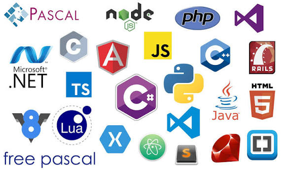
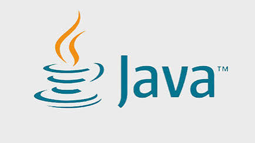
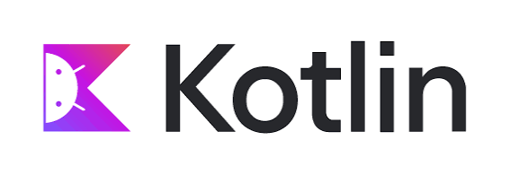
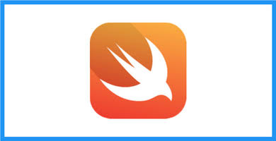
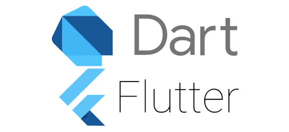
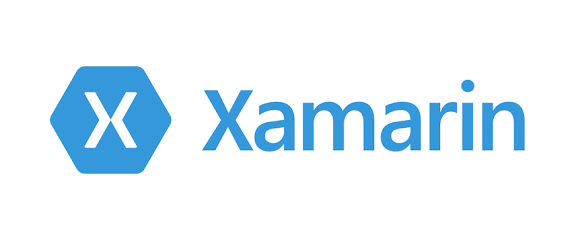

💻Lenguajes de Programación para Aplicaciones Móviles
La programacion de una aplicacion movil es el crear un doftware que sea capaz de correr en un dispositivo como un telefono o una tableta,siendo capaz de funcionar en diversos sistemas operativos moviles tales como lo son Android o iOS.El desarrollar una app movil es un trabajo laborioso y tardado que requiere paciencia,por ello es de vital importancia elegir correctamente el lenguaje en el que construiremos nuestra app,cosa que para ello deberemos tener en cuenta los distintos lenguajes de programacion que existen y en que area se especializa,asi como sus ventajas,desventajas,para que tipo de dispositivo esta diseñado y su complejidad,para que respecto a esto poder elegir nuestro lenguaje ideal
1. Java (Android)
Características:
- Orientado a objetos.
- Usado por años como lenguaje principal de Android.
- Gran comunidad y documentación.
Curva de aprendizaje: Media a alta.
Ventajas:
- Amplio soporte y librerías.
- Compatibilidad con la mayoría de dispositivos Android.
- Alto rendimiento.
Desventajas:
- Sintaxis extensa.
- Desarrollo más lento comparado con lenguajes modernos.
Ejemplos de apps:
- Spotify
- Twitter (versiones iniciales)
- Signal
2. Kotlin (Android)
Características:
- Moderno y conciso.
- Totalmente interoperable con Java.
- Lenguaje oficial recomendado por Google.
Curva de aprendizaje: Media.
Ventajas:
- Código más limpio y seguro.
- Menos errores comunes.
- Mejor productividad.
Desventajas:
- Tiempo de compilación variable.
- Menos recursos que Java (aunque en crecimiento).
Ejemplos de apps:
- Coursera
- Uber (módulos internos)
3. Swift (iOS)
Características:
- Rápido, seguro y moderno.
- Desarrollado por Apple.
- Orientado a objetos y funcional.
Curva de aprendizaje: Media.
Ventajas:
- Excelente rendimiento.
- Optimizado para el ecosistema Apple.
- Sintaxis clara.
Desventajas:
- Solo funciona en ecosistema Apple.
- Requiere Mac para desarrollo.
Ejemplos de apps:
- Airbnb
- Slack (iOS)
4. Objective-C (iOS)
Características:
- Lenguaje histórico de Apple.
- Orientado a objetos con sintaxis basada en C.
- Robusto y probado por décadas.
Curva de aprendizaje: Alta.
Ventajas:
- Extremadamente estable.
- Amplia compatibilidad con frameworks antiguos.
Desventajas:
- Sintaxis compleja.
- Menos moderno que Swift.
Ejemplos de apps:
- Evernote (versiones anteriores)
- Instagram (versiones antiguas)
- WhatsApp (componentes heredados)
5. JavaScript (React Native)

Características:
- Usa React Native para crear apps móviles.
- Permite usar un solo código para Android y iOS.
- Basado en componentes.
Curva de aprendizaje: Baja a media (si se conoce JS).
Ventajas:
- Desarrollo rápido.
- Compartición de código entre plataformas.
- Amplia comunidad.
Desventajas:
- Menor rendimiento que apps nativas.
- Dependencia de librerías externas.
Ejemplos de apps:
- Walmart
6. Dart (Flutter)
Características:
- Lenguaje creado por Google.
- Usado en el framework Flutter.
- Compila a código nativo.
Curva de aprendizaje: Media.
Ventajas:
- UI muy personalizable.
- Rendimiento casi nativo.
- Hot reload para desarrollo rápido.
Desventajas:
- Apps más pesadas en tamaño.
- Menor madurez comparado con otros lenguajes.
Ejemplos de apps:
- Google Ads
- Alibaba
- BMW App
7. C# (Xamarin / .NET MAUI)
Características:
- Basado en .NET.
- Permite desarrollo multiplataforma.
- Soporta Android, iOS y Windows.
Curva de aprendizaje: Media.
Ventajas:
- Reutilización de gran parte del código.
- Muy estable.
- Soporte empresarial.
Desventajas:
- Rendimiento inferior al nativo.
- Dependencia del ecosistema Microsoft.
Ejemplos de apps:
- Alaska Airlines
- UPS Mobile
- BBC Good Food
Referencias
- https://scoreapps.com/blog/mejores-lenguajes-de-programacion-para-apps-moviles/
- https://immune.institute/blog/lenguajes-de-programacion-para-movil/
- https://zennaxx.com/mobile-app-development-languages/#:~:text=%C2%BFQu%C3%A9%20lenguajes%20de%20programaci%C3%B3n%20se,Android%20a%20trav%C3%A9s%20de%20Flutter